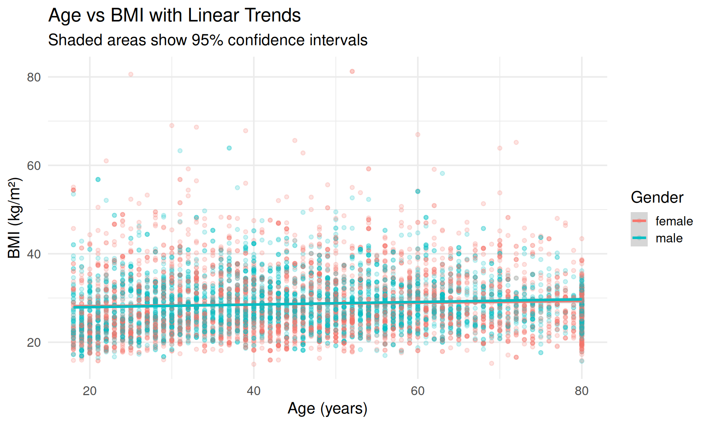
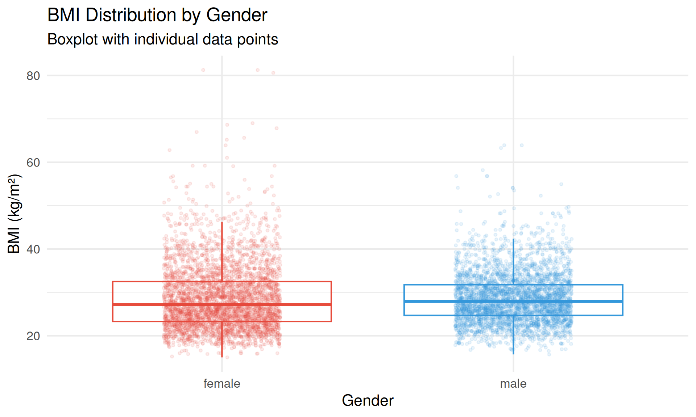
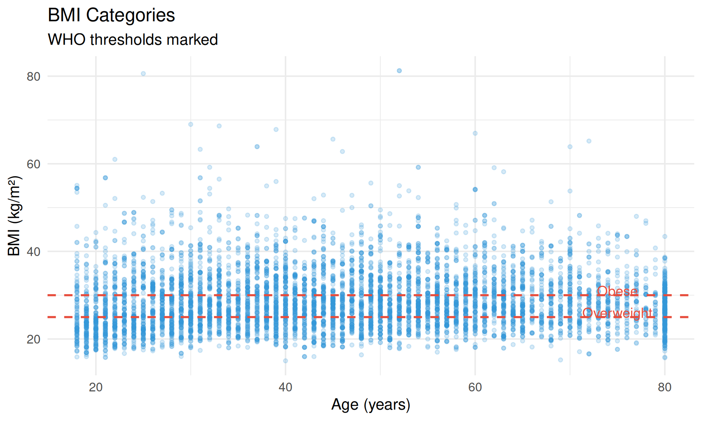
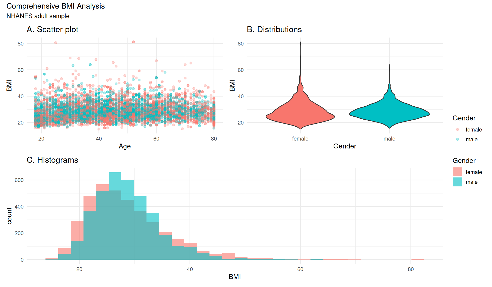

ggplot2 Advanced
Layering, Statistics, and Complex Visualizations
Beyond the Basics
You’ve learned: - Grammar of Graphics - Basic plots and geometries - Customization with themes and colors
Now: Advanced techniques for complex visualizations
Layering Geometries
ggplot2’s power: combining multiple geoms
- Points + trend lines
- Boxplots + individual points
- Histograms + density curves
- Statistical summaries + raw data
Points + Smooth
ggplot(nhanes_clean, aes(x = Age, y = BMI, color = Gender)) +
geom_point(alpha = 0.2, size = 1.5) +
geom_smooth(method = "lm", se = TRUE, linewidth = 1.2) +
labs(
title = "Age vs BMI with Linear Trends",
subtitle = "Shaded areas show 95% confidence intervals",
x = "Age (years)",
y = "BMI (kg/m²)"
) +
theme_minimal(base_size = 16)Smoothing Methods
Different methods reveal different patterns:
method = "lm"- Linear modelmethod = "loess"- Local regression (default)method = "gam"- Generalized additive model
Smoothing Comparison
Boxplot + Jitter
Combine summaries with raw data:

ggplot(nhanes_clean, aes(x = Gender, y = BMI, color = Gender)) +
geom_boxplot(outlier.shape = NA, alpha = 0.5, show.legend = FALSE) +
geom_jitter(alpha = 0.1, width = 0.2, size = 1, show.legend = FALSE) +
scale_color_manual(values = c("#e74c3c", "#3498db")) +
labs(
title = "BMI Distribution by Gender",
subtitle = "Boxplot with individual data points",
x = "Gender",
y = "BMI (kg/m²)"
) +
theme_minimal(base_size = 16)Handling Overplotting
When you have many points:
- Transparency:
alpha = 0.1 - Jittering:
geom_jitter() - 2D density:
geom_density_2d() - Hexagonal bins:
geom_hex()
Overplotting Solutions
Position Adjustments
Control how geoms are positioned:
position = "dodge"- Side-by-sideposition = "stack"- Stackedposition = "fill"- Proportional stackingposition = "jitter"- Add random noise
Annotations
Add reference lines and text:

ggplot(nhanes_clean, aes(x = Age, y = BMI)) +
geom_point(alpha = 0.2, size = 1.5, color = "#3498db") +
geom_hline(yintercept = 25, linetype = "dashed", color = "#e74c3c", linewidth = 1) +
geom_hline(yintercept = 30, linetype = "dashed", color = "#e74c3c", linewidth = 1) +
annotate("text", x = 75, y = 26, label = "Overweight", size = 5, color = "#e74c3c") +
annotate("text", x = 75, y = 31, label = "Obese", size = 5, color = "#e74c3c") +
labs(
title = "BMI Categories",
subtitle = "WHO thresholds marked",
x = "Age (years)",
y = "BMI (kg/m²)"
) +
theme_minimal(base_size = 16)Combining Plots: patchwork
Create multi-panel figures:
Multi-Panel Example

p1 <- ggplot(nhanes_clean, aes(x = Age, y = BMI, color = Gender)) +
geom_point(alpha = 0.3) +
labs(title = "A. Scatter plot") +
theme_minimal(base_size = 12)
p2 <- ggplot(nhanes_clean, aes(x = Gender, y = BMI, fill = Gender)) +
geom_violin(show.legend = FALSE) +
labs(title = "B. Distributions") +
theme_minimal(base_size = 12)
p3 <- ggplot(nhanes_clean, aes(x = BMI, fill = Gender)) +
geom_histogram(alpha = 0.6, position = "identity", bins = 30) +
labs(title = "C. Histograms") +
theme_minimal(base_size = 12)
(p1 | p2) / p3 +
plot_layout(guides = "collect") +
plot_annotation(
title = "Comprehensive BMI Analysis",
subtitle = "NHANES adult sample"
)Saving High-Quality Plots
Use ggsave() for publication-ready figures:
Custom Themes
Create reusable themes:
Extension Packages
Extend ggplot2’s capabilities:
- ggrepel - Better text labels
- ggridges - Ridge plots
- GGally - Pairs plots
- gganimate - Animated plots
- plotly - Interactive plots
- ggpubr - Publication-ready plots
Best Practices
- Start simple, add layers gradually
- Every element should serve a purpose
- Use transparency to reveal overlapping data
- Consistent styling across all figures
- Test with colorblind simulators
- Save code, not just images (reproducibility!)
Resources
Summary
You’ve learned: - ✅ Layering multiple geoms - ✅ Statistical transformations - ✅ Handling overplotting
- ✅ Annotations and reference lines - ✅ Combining plots with patchwork - ✅ Saving high-quality figures
Now: Practice, experiment, create!